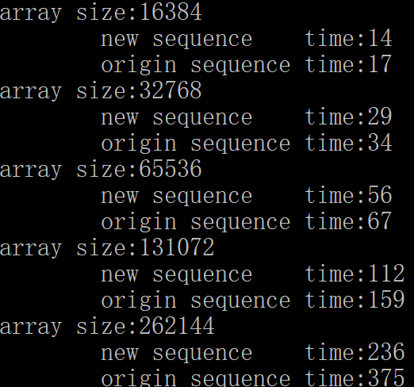

© 2019 《算法（第四版）》C# 题解 | Provided By 沈星繁
搜索解答
目前已完成到 2.5
2.1.29
上次更新：2019-02-13
题目
2.1.29
希尔排序的递增序列。
通过实验比较算法 2.3 中所使用的递增序列和递增序列
1, 5, 19, 41, 109, 209, 505, 929, 2161, 3905, 8929, 16001, 36289, 64769, 146305, 260609
（这是通过序列 9×4^(k)-9×2^(k)+1 和 4^(k)-3×2^(k)+1 综合得到的）。
可以参考练习 2.1.11。
解答
当然是题目给出的递增序列更快啦，因为这个序列就是作者提出来的嘛。
（论文链接： http://linkinghub.elsevier.com/retrieve/pii/0196677486900015）

代码
修改了一下 shellsort，让它按照给定的 h 序列排序。
using System;
using System.Diagnostics;
using Sort;
namespace _2._1._29
{
public class ShellSort : BaseSort
{
/// <summary>
/// 默认构造函数。
/// </summary>
public ShellSort() { }
/// <summary>
/// 利用希尔排序将数组按升序排序。
/// </summary>
/// <typeparam name="T">待排序的元素类型。</typeparam>
/// <param name="a">待排序的数组。</param>
/// <param name="h">需要使用的递增序列。</param>
public void Sort<T>(T[] a, int[] h) where T : IComparable<T>
{
int n = a.Length;
int t = 0;
while (h[t] < a.Length)
{
t++;
if (t >= h.Length)
break;
}
t--;
for ( ; t >= 0; t--)
{
for (int i = h[t]; i < n; i++)
{
for (int j = i; j >= h[t] && Less(a[j], a[j - h[t]]); j -= h[t])
{
Exch(a, j, j - h[t]);
}
}
Debug.Assert(IsHSorted(a, h[t]));
}
Debug.Assert(IsSorted(a));
}
/// <summary>
/// 利用希尔排序将数组按升序排序。
/// </summary>
/// <param name="a">需要排序的数组。</param>
public override void Sort<T>(T[] a)
{
int n = a.Length;
int[] h = new int[2]; // 预先准备好的 h 值数组
int hTemp = 1;
int sequenceSize = 0;
for (sequenceSize = 0; hTemp < n; sequenceSize++)
{
if (sequenceSize >= h.Length) // 如果数组不够大则双倍扩容
{
int[] expand = new int[h.Length * 2];
for (int j = 0; j < h.Length; j++)
{
expand[j] = h[j];
}
h = expand;
}
h[sequenceSize] = hTemp;
hTemp = hTemp * 3 + 1;
}
for (int t = sequenceSize - 1; t >= 0; t--)
{
for (int i = h[t]; i < n; i++)
{
for (int j = i; j >= h[t] && Less(a[j], a[j - h[t]]); j -= h[t])
{
Exch(a, j, j - h[t]);
}
}
Debug.Assert(IsHSorted(a, h[t]));
}
Debug.Assert(IsSorted(a));
}
/// <summary>
/// 检查一次希尔排序后的子数组是否有序。
/// </summary>
/// <param name="a">排序后的数组。</param>
/// <param name="h">子数组间隔。</param>
/// <returns>是否有序。</returns>
private bool IsHSorted<T>(T[] a, int h) where T : IComparable<T>
{
for (int i = h; i < a.Length; i++)
{
if (Less(a[i], a[i - h]))
{
return false;
}
}
return true;
}
}
}